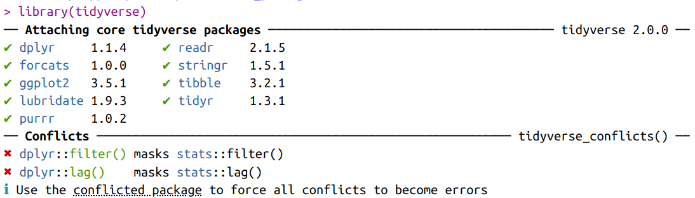

library(gapminder)
library(nycflights13)
library(tidyverse)4 Datentransformation
Bei der Arbeit mit Daten stehen wir fortwährend vor der Aufgabe, vorhandene Daten zu bearbeiten, um Fragen zu beantworten oder sie für weitere Auswertungsschritte vorzubereiten. Wir benötigen dabei Fähigkeiten, Daten zu transformieren, sie also unseren Erfordernissen entsprechend zu verändern. Hierfür stehen in R viele unterschiedliche Möglichkeiten zur Verfügung, von denen wir einige besonders beliebte und verbreitete kennenlernen möchten. Dabei werden wir lernen, dass die Arbeit mit Daten – in diesem Fall Tabellen – in R einfacher und nachvollziehbarer abläuft als etwa in Tabellenkalkulationssoftware.
In diesem Kapitel lernen wir…
- …was das
tidyverseist. - …wie wir die Zeilen und Spalten von Tabellen verändern.
- …wie wir gruppenweise Operationen durchführen.
Wir benötigen hierfür die folgenden Pakete:
4.1 Was ist das tidyverse?
Ausgerüstet mit den wichtigsten Prinzipien und Begriffen rund um R, möchten wir in diesem Kapitel den Einstieg ins tidyverse wagen. Was aber genau ist das tidyverse eigentlich? Einen Hinweis bekommen wir, wenn wir das entsprechende Paket laden.
library(tidyverse)
tidyverse-Pakets.“Das” tidyverse ist eine Sammlung unterschiedlicher packages, die ihrerseits eine Reihe wichtiger Funktionen zur Datenauswertung anbieten. Angestoßen durch den Programmierer Hadley Wickham, stehen hinter diesen Paketen viele Autor*innen, die der Wunsch eint, Funktionen mit einheitlichem Syntax (Reihenfolge von Argumenten, wichtig für die Nutzung der Pipe |>), konsistenten und einprägsamen Namen und einem hohen Grad an Kompatibilität (Objektklassen von input und output) untereinander zu entwickeln. Zu den Schwerpunkten der tidyverse-Pakete gehören:
dplyr: Bearbeiten von data frames bzw. tibblesforcats: Arbeiten mitfactorsggplot2: Visualisieren unterschiedlichster Datenlubridate: Arbeiten mitDatespurrr: Funktionales Programmierenreadr: Einlesen und Schreiben von Daten unterschiedlicher Formatestringr: Arbeiten mitcharactersstibble: Erstellen und konvertieren von tibblestidyr: Bereinigen von data frames bzw. tibbles
All diese Pakete werden auf einmal geladen, sobald wir library(tidyverse) ausführen.1 Dabei gibt es aber zwei Konflikte: in den Fällen der Funktionen filter() und lag() überschreiben dplyr-Funktionen nunmehr die gleichnamigen base R-Varianten aus dem Paket stats. Das heißt, wenn wir ab sofort filter() eingeben, wird die dplyr-Variante ausgeführt. Sollten wir doch die stats-Variante ausführen wollen, können wir das mit stats::filter()2 tun.
Nicht alles, was die tidyverse-Pakete bieten, ist dabei neu. In vielen Fällen handelt es sich eher um veränderte Funktionen von base R, die nichtsdestotrotz die Anwendung eleganter und, insbesondere für R-Einsteiger*innen, zugänglicher gestalten.
4.1.1 dplyr
In diesem Abschnitt lernen wir die grundlegenden Verben von dplyr lernen, die zu den häufigsten genutzten Funktionen aller R-Nutzer*innen zählen. Dabei nutzen wir von nun an die Pipe (|>), um Objekte und Funktionen zu verknüpfen. Desweiteren ist es nützlich, das entsprechende Cheatsheet (Kapitel 2.4.5) als Hilfsmittel zur Hand zu haben.
Für die meisten dplyr-Funktionen gelten dabei folgende Regeln:
- Daten müssen in einem tidy (“aufgeräumten”) Format vorliegen. Das bedeutet, dass jede Variable in einer eigenen Spalte und jede Beobachtung in einer eigenen Zeile.3
- Der erste Parameter einer Funktion,
.data, benötigt als Argument immer einen data frame bzw. eine tibble. - Die weiteren Argumente beschreiben typischerweise, mit welchen Spalten etwas gemacht werden soll. Hierfür werden die Spaltennamen ohne Anführungszeichen angegeben.
- Der output ist immer ein neuer ein neuer data frame bzw. eine neue tibble.
Der Einfachheit halber werden die meisten sogenannten dplyr-“Verben”4 danach geordnet, ob sie Zeilen (rows), Spalten (columns), Gruppen (groups) oder Tabellen (tables) bearbeiten.
4.1.2 Der gapminder-Datensatz
Als data frame dient uns gapminder. Bei gapminder handelt es sich um einen Datensatz mit sozio-ökonomischen Daten von 142 Ländern zwischen den Jahren 1952 bis 2007. Über einen uns unbekannten data frame wie gapminder können wir uns gleich auf mehrere Arten einen Überblick verschaffen.
Mit **glimpse()** erfahren wir direkt, dass gapminder 1704 Zeilen und 6 Spalten hat, welche Datentypen diese Spalten haben und wie die ersten Werte aussehen.
glimpse(gapminder) # Erster Blick auf gapminderRows: 1,704
Columns: 6
$ country <fct> "Afghanistan", "Afghanistan", "Afghanistan", "Afghanistan", …
$ continent <fct> Asia, Asia, Asia, Asia, Asia, Asia, Asia, Asia, Asia, Asia, …
$ year <int> 1952, 1957, 1962, 1967, 1972, 1977, 1982, 1987, 1992, 1997, …
$ lifeExp <dbl> 28.801, 30.332, 31.997, 34.020, 36.088, 38.438, 39.854, 40.8…
$ pop <int> 8425333, 9240934, 10267083, 11537966, 13079460, 14880372, 12…
$ gdpPercap <dbl> 779.4453, 820.8530, 853.1007, 836.1971, 739.9811, 786.1134, …Mit str() erfahren wir desweiteren noch wieviele unterschiedliche Ausprägungen (levels) die Variablen country und continent haben.
str(gapminder) # Struktur von gapminder anzeigentibble [1,704 × 6] (S3: tbl_df/tbl/data.frame)
$ country : Factor w/ 142 levels "Afghanistan",..: 1 1 1 1 1 1 1 1 1 1 ...
$ continent: Factor w/ 5 levels "Africa","Americas",..: 3 3 3 3 3 3 3 3 3 3 ...
$ year : int [1:1704] 1952 1957 1962 1967 1972 1977 1982 1987 1992 1997 ...
$ lifeExp : num [1:1704] 28.8 30.3 32 34 36.1 ...
$ pop : int [1:1704] 8425333 9240934 10267083 11537966 13079460 14880372 12881816 13867957 16317921 22227415 ...
$ gdpPercap: num [1:1704] 779 821 853 836 740 ...Desweiteren können wir uns mit summary() eine Art statistische Zusammenfassung der einzelnen Variablen anzeigen lassen.
summary(gapminder) # Zusammenfassung von gapminder anzeigen country continent year lifeExp
Afghanistan: 12 Africa :624 Min. :1952 Min. :23.60
Albania : 12 Americas:300 1st Qu.:1966 1st Qu.:48.20
Algeria : 12 Asia :396 Median :1980 Median :60.71
Angola : 12 Europe :360 Mean :1980 Mean :59.47
Argentina : 12 Oceania : 24 3rd Qu.:1993 3rd Qu.:70.85
Australia : 12 Max. :2007 Max. :82.60
(Other) :1632
pop gdpPercap
Min. :6.001e+04 Min. : 241.2
1st Qu.:2.794e+06 1st Qu.: 1202.1
Median :7.024e+06 Median : 3531.8
Mean :2.960e+07 Mean : 7215.3
3rd Qu.:1.959e+07 3rd Qu.: 9325.5
Max. :1.319e+09 Max. :113523.1
Mit ?gapminder können wir schließlich mehr über die einzelnen Variablen erfahren:
country: Einfactor-Vektor mit 142 levels, also Ländernamencontinent: Einfactor-Vektor mit 5 levels, also Kontinentnamenyear: eininteger-Vektor mit Jahresangaben in 5-Jahres-SchrittenlifeExp: einnumeric-Vektor mit der Lebenserwartung bei Geburt in Jahrenpop: eininteger-Vektor mit der absoluten BevölkerungszahlgdpPercap: einnumeric-Vektor mit dem Bruttoinlandsprodukt (BIP, gross domestic product) in inflationsbereinigten US-Dollar
Piping
In allen folgenden Beispielen beginnen wir, mehrere Arbeitsschritte mit der pipe zu verbinden (Kapitel 3.2.2). Dabei empfiehlt sich, nach Eingabe der Pipe mit Shift+Enter eine neue Zeile zu beginnen. Auf diese Weise können wir unseren Code immer in folgender Form lesen und verstehen: Mach erst dies, dann das.
4.2 Zeilen
4.2.1 Filtering
Oft möchten wir nicht mit einem gesamten Datensatz arbeiten, sondern nur mit einer bestimmten Auswahl. Oder wir möchten lediglich wissen, wieviele Beobachtungen mit bestimmten Eigenschaften in unserem größeren Datensatz stecken. In diesen und ähnlichen Fällen möchten wir einen Datensatz filtern, also anhand logischer Ausdrücke mit den uns bekannten Operatoren (Kapitel 3.4.8) Bedingungen formulieren, anhand derer Zeilen ausgewählt oder fallengelassen (drop) werden.
Ein naheliegendes Beispiel ist, nur die Beobachtungen (Zeilen) für Deutschland auszuwählen. Hier ist unsere Bedingung, dass country dem Wert Germany entspricht, also gleich ist; folglich nutzen wir den ==-Operator.
gapminder |>
filter(country == "Germany")# A tibble: 12 × 6
country continent year lifeExp pop gdpPercap
<fct> <fct> <int> <dbl> <int> <dbl>
1 Germany Europe 1952 67.5 69145952 7144.
2 Germany Europe 1957 69.1 71019069 10188.
3 Germany Europe 1962 70.3 73739117 12902.
4 Germany Europe 1967 70.8 76368453 14746.
5 Germany Europe 1972 71 78717088 18016.
6 Germany Europe 1977 72.5 78160773 20513.
7 Germany Europe 1982 73.8 78335266 22032.
8 Germany Europe 1987 74.8 77718298 24639.
9 Germany Europe 1992 76.1 80597764 26505.
10 Germany Europe 1997 77.3 82011073 27789.
11 Germany Europe 2002 78.7 82350671 30036.
12 Germany Europe 2007 79.4 82400996 32170.Die uns ausgegebene tibble hat nun also nicht mehr 1704, sondern nur noch 12 Zeilen. Mit != könnten wir hingegen alle Beobachtungen, die sich nicht auf Deutschland beziehen, auswählen und so einen neuen data frame mit 1692 Zeilen erzeugen.
gapminder |>
filter(country != "Germany")# A tibble: 1,692 × 6
country continent year lifeExp pop gdpPercap
<fct> <fct> <int> <dbl> <int> <dbl>
1 Afghanistan Asia 1952 28.8 8425333 779.
2 Afghanistan Asia 1957 30.3 9240934 821.
3 Afghanistan Asia 1962 32.0 10267083 853.
4 Afghanistan Asia 1967 34.0 11537966 836.
5 Afghanistan Asia 1972 36.1 13079460 740.
6 Afghanistan Asia 1977 38.4 14880372 786.
7 Afghanistan Asia 1982 39.9 12881816 978.
8 Afghanistan Asia 1987 40.8 13867957 852.
9 Afghanistan Asia 1992 41.7 16317921 649.
10 Afghanistan Asia 1997 41.8 22227415 635.
# ℹ 1,682 more rowsMit einem weiteren Operator, %in%, können wir mehrere Werte auswählen, nach deren Beobachtungen wir filtern möchten.
gapminder |>
filter(country %in% c("Belgium", "France", "Germany"))# A tibble: 36 × 6
country continent year lifeExp pop gdpPercap
<fct> <fct> <int> <dbl> <int> <dbl>
1 Belgium Europe 1952 68 8730405 8343.
2 Belgium Europe 1957 69.2 8989111 9715.
3 Belgium Europe 1962 70.2 9218400 10991.
4 Belgium Europe 1967 70.9 9556500 13149.
5 Belgium Europe 1972 71.4 9709100 16672.
6 Belgium Europe 1977 72.8 9821800 19118.
7 Belgium Europe 1982 73.9 9856303 20980.
8 Belgium Europe 1987 75.4 9870200 22526.
9 Belgium Europe 1992 76.5 10045622 25576.
10 Belgium Europe 1997 77.5 10199787 27561.
# ℹ 26 more rowsBei numerischen Variablen können wir zudem mit den entsprechenden Operatoren gleichermaßen unsere Auswahl einschränken. Möchten wir nur Fälle seit 1990 auswählen, geben wir die Anweisung, dass year größer-gleich (>=) 1990 sein soll.
gapminder |>
filter(year >= 1990)# A tibble: 568 × 6
country continent year lifeExp pop gdpPercap
<fct> <fct> <int> <dbl> <int> <dbl>
1 Afghanistan Asia 1992 41.7 16317921 649.
2 Afghanistan Asia 1997 41.8 22227415 635.
3 Afghanistan Asia 2002 42.1 25268405 727.
4 Afghanistan Asia 2007 43.8 31889923 975.
5 Albania Europe 1992 71.6 3326498 2497.
6 Albania Europe 1997 73.0 3428038 3193.
7 Albania Europe 2002 75.7 3508512 4604.
8 Albania Europe 2007 76.4 3600523 5937.
9 Algeria Africa 1992 67.7 26298373 5023.
10 Algeria Africa 1997 69.2 29072015 4797.
# ℹ 558 more rowsWenn wir den Zeitraum nicht nur nach unten, sondern auch nach oben begrenzen möchten, können wir mithilfe des &-Operators einfach zwei Bedingungen angeben, zum Beispiel dass year größer-gleich (>=) 1990 und zugleich kleiner-gleich (<=) 2000 sein soll.
gapminder |>
filter(year >= 1990 & year <= 2000)# A tibble: 284 × 6
country continent year lifeExp pop gdpPercap
<fct> <fct> <int> <dbl> <int> <dbl>
1 Afghanistan Asia 1992 41.7 16317921 649.
2 Afghanistan Asia 1997 41.8 22227415 635.
3 Albania Europe 1992 71.6 3326498 2497.
4 Albania Europe 1997 73.0 3428038 3193.
5 Algeria Africa 1992 67.7 26298373 5023.
6 Algeria Africa 1997 69.2 29072015 4797.
7 Angola Africa 1992 40.6 8735988 2628.
8 Angola Africa 1997 41.0 9875024 2277.
9 Argentina Americas 1992 71.9 33958947 9308.
10 Argentina Americas 1997 73.3 36203463 10967.
# ℹ 274 more rowsUm einfacheren Code hinsichtlich einer solchen Spanne numerischer Werte zu schreiben, können wir die Hilfsfunktion between() nutzen. Sie kommt innerhalb von filter() zum Einsatz und benötigt lediglich den Namen der Variable, nach der wir filtern möchten, sowie den niedrigsten und höchsten gewünschten Wert. Das Ergebnis ist dasselbe wie jenes der zwei mittels & verknüpften Bedingungen.
gapminder |>
filter(between(year, 1990, 2000))# A tibble: 284 × 6
country continent year lifeExp pop gdpPercap
<fct> <fct> <int> <dbl> <int> <dbl>
1 Afghanistan Asia 1992 41.7 16317921 649.
2 Afghanistan Asia 1997 41.8 22227415 635.
3 Albania Europe 1992 71.6 3326498 2497.
4 Albania Europe 1997 73.0 3428038 3193.
5 Algeria Africa 1992 67.7 26298373 5023.
6 Algeria Africa 1997 69.2 29072015 4797.
7 Angola Africa 1992 40.6 8735988 2628.
8 Angola Africa 1997 41.0 9875024 2277.
9 Argentina Americas 1992 71.9 33958947 9308.
10 Argentina Americas 1997 73.3 36203463 10967.
# ℹ 274 more rows4.2.1.1 Verknüpfte Bedingungen
Bislang haben wir nur Bedingungen mit Hinblick auf eine Variable verwendet. Wirklich nützlich wird filter() aber, wenn wir mehrere Bedingungen zusammen nutzen. Hierfür stehen uns mit & (beide Bedingungen müssen erfüllt sein) und | (mind. eine Bedingung muss erfüllt sein) die entsprechenden Werkzeuge bereit. Möchten wir etwa nur die sich auf Deutschland beziehenden Beobachtungen und auf Jahre seit 1990 auswählen, nutzen wir &.
gapminder |>
filter(country == "Germany" & year >= 1990)# A tibble: 4 × 6
country continent year lifeExp pop gdpPercap
<fct> <fct> <int> <dbl> <int> <dbl>
1 Germany Europe 1992 76.1 80597764 26505.
2 Germany Europe 1997 77.3 82011073 27789.
3 Germany Europe 2002 78.7 82350671 30036.
4 Germany Europe 2007 79.4 82400996 32170.Eine andere Art, dasselbe Ergebnis zu erzielen, ist, die beiden Bedingungen einfach durch ein Komma (,) zu trennen. Auch in diesem Fall liest R es als ein &.
gapminder |>
filter(country == "Germany", year >= 1990)# A tibble: 4 × 6
country continent year lifeExp pop gdpPercap
<fct> <fct> <int> <dbl> <int> <dbl>
1 Germany Europe 1992 76.1 80597764 26505.
2 Germany Europe 1997 77.3 82011073 27789.
3 Germany Europe 2002 78.7 82350671 30036.
4 Germany Europe 2007 79.4 82400996 32170.Mit | wird die Tabelle hingegen entsprechend länger, denn nun werden alle Zeilen ausgewählt, die Deutschland repräsentieren oder deren Jahr mindestens 1990 beträgt.
gapminder |>
filter(country == "Germany" | year >= 1990)# A tibble: 576 × 6
country continent year lifeExp pop gdpPercap
<fct> <fct> <int> <dbl> <int> <dbl>
1 Afghanistan Asia 1992 41.7 16317921 649.
2 Afghanistan Asia 1997 41.8 22227415 635.
3 Afghanistan Asia 2002 42.1 25268405 727.
4 Afghanistan Asia 2007 43.8 31889923 975.
5 Albania Europe 1992 71.6 3326498 2497.
6 Albania Europe 1997 73.0 3428038 3193.
7 Albania Europe 2002 75.7 3508512 4604.
8 Albania Europe 2007 76.4 3600523 5937.
9 Algeria Africa 1992 67.7 26298373 5023.
10 Algeria Africa 1997 69.2 29072015 4797.
# ℹ 566 more rows4.2.1.2 Duplikate
Es ist nie ausgeschlossen, dass Datensätze Duplikate enthalten, die die weitere Auswertung beeinflussen würden. Um diese Duplikate zu entfernen, können wir eine bestimmte Filterfunktion namens distinct() (“eindeutig”) heranziehen. In der folgenden tibble sind die Zeilen 1 und 2 Duplikate.
my_tibble <- tibble(x = c(1, 1, 2, 3), # Zahlen-Vektor erzeugen
y = rep("a",
times = 4)) # Character-Vektor erzeugen
my_tibble# A tibble: 4 × 2
x y
<dbl> <chr>
1 1 a
2 1 a
3 2 a
4 3 a Sobald wir distinct() auf my_tibble anwenden, bleibt nur eine der beiden identischen Zeilen bestehen.
my_tibble |>
distinct()# A tibble: 3 × 2
x y
<dbl> <chr>
1 1 a
2 2 a
3 3 a Doch darin erschöpft sich die Nützlichkeit von distinct() nicht. Nennen wir der Funktion weitere Spalten, gibt sie uns alle einmaligen Kombinationen aus.
gapminder |>
distinct(country, continent) |> # Alle eindeutigen Kombinationen der zwei Spalten ausgeben
slice_head(n = 3) # Aus Platzgründen: Nur die obersten drei Zeilen anzeigen# A tibble: 3 × 2
country continent
<fct> <fct>
1 Afghanistan Asia
2 Albania Europe
3 Algeria Africa
Filtering mit base R
Nachdem wir ein Gespür dafür entwickelt haben, wie einfach das Filtern mit der dplyr-Variante von filter() ist, möchten wir wenigstens noch erwähnen, wie das gleiche Ergebnis mit base R erzielt werden könnte. Um auf diese Weise aus gapminder nur alle Zeilen auszugeben, bei denen country == "Germany" gilt, müssen wir die Indexschreibweise (Kapitel 3.5.1) in Kombination mit dem $-Operator (Kapitel 3.5.3) nutzen. Wir tun dies in zwei Schritten tun:
- Mit
gapminder$country == "Germany"erzeugen wir einen Vektor logischer Werte, der soviele Elemente (nämlich 1704) wiegapminderZeilen hat. - Diesen Vektor wenden wir mit der Indexschreibweise auf
gapminderan, indem wir ihn als Zeilenangaberin[r, c]nutzen.
gapminder[gapminder$country == "Germany", ] # Der zweite Index bleibt leer, weil wir alle Spalten auswählen möchten# A tibble: 12 × 6
country continent year lifeExp pop gdpPercap
<fct> <fct> <int> <dbl> <int> <dbl>
1 Germany Europe 1952 67.5 69145952 7144.
2 Germany Europe 1957 69.1 71019069 10188.
3 Germany Europe 1962 70.3 73739117 12902.
4 Germany Europe 1967 70.8 76368453 14746.
5 Germany Europe 1972 71 78717088 18016.
6 Germany Europe 1977 72.5 78160773 20513.
7 Germany Europe 1982 73.8 78335266 22032.
8 Germany Europe 1987 74.8 77718298 24639.
9 Germany Europe 1992 76.1 80597764 26505.
10 Germany Europe 1997 77.3 82011073 27789.
11 Germany Europe 2002 78.7 82350671 30036.
12 Germany Europe 2007 79.4 82400996 32170.Möchten wir zwei Bedingungen anwenden, können wir innerhalb der Indexangabe die uns bekannten Operatoren nutzen.
gapminder[gapminder$country == "Germany" & gapminder$year >= 1990, ] # Nur die Beobachtungen Deutschlands ab dem Jahr 1990 ausgeben# A tibble: 4 × 6
country continent year lifeExp pop gdpPercap
<fct> <fct> <int> <dbl> <int> <dbl>
1 Germany Europe 1992 76.1 80597764 26505.
2 Germany Europe 1997 77.3 82011073 27789.
3 Germany Europe 2002 78.7 82350671 30036.
4 Germany Europe 2007 79.4 82400996 32170.Mit dieser Schreibweise ist nichts falsch und sie wird uns immer wieder beim Stöbern nach Lösungen für eigenen R-Arbeiten begegnen. Dennoch sollte ersichtlich sein, dass die dplyr-Variante deutlich leichter zu lesen und zu verstehen ist.
Im weiteren Verlauf werden wir deshalb nur selten base R heranziehen, sondern uns auf tidyverse-Varianten konzentrieren.
4.2.2 Slicing
Eine nützliche Erweiterung von filter() sind die slice_*()-Funktionen. Weil data frames durchnummeriert sind, können wir mit slice() eine bestimmte Zeile anzeigen lassen.
gapminder |>
slice(2) # Nur die zweite Zeile auswählen# A tibble: 1 × 6
country continent year lifeExp pop gdpPercap
<fct> <fct> <int> <dbl> <int> <dbl>
1 Afghanistan Asia 1957 30.3 9240934 821.Gleichermaßen können wir einen Bereich an Zeilen auswählen.
gapminder |>
slice(2:5) # Nur die Zeilen 2 bis 5 auswählen# A tibble: 4 × 6
country continent year lifeExp pop gdpPercap
<fct> <fct> <int> <dbl> <int> <dbl>
1 Afghanistan Asia 1957 30.3 9240934 821.
2 Afghanistan Asia 1962 32.0 10267083 853.
3 Afghanistan Asia 1967 34.0 11537966 836.
4 Afghanistan Asia 1972 36.1 13079460 740.Analog zu den uns bereits bekannten head() und tail() (Kapitel 3.5.3) können wir mit slice_head() und slice_tail() auch eine bestimmte Anzahl der obersten oder untersten Zeilen ausgeben.
gapminder |>
slice_head(n = 2) # Nur die obersten zwei Zeilen auswählen# A tibble: 2 × 6
country continent year lifeExp pop gdpPercap
<fct> <fct> <int> <dbl> <int> <dbl>
1 Afghanistan Asia 1952 28.8 8425333 779.
2 Afghanistan Asia 1957 30.3 9240934 821.gapminder |>
slice_tail(n = 2) # Nur die untersten zwei Zeilen auswählen# A tibble: 2 × 6
country continent year lifeExp pop gdpPercap
<fct> <fct> <int> <dbl> <int> <dbl>
1 Zimbabwe Africa 2002 40.0 11926563 672.
2 Zimbabwe Africa 2007 43.5 12311143 470.Regelmäßig sind wir aber besonders an den höchsten oder niedrigsten Werten einer Variable interessiert. Mit slice_min(x, n) und slice_max(x, n) können wir die n5 Zeilen mit den niedrigsten bzw. höchsten Werten6 einer Variable x ausgeben lassen.
gapminder |>
slice_min(gdpPercap, n = 5) # Nur die fünf Zeilen mit den niedrigsten Pro-Kopf-BIP-Werten ausgeben# A tibble: 5 × 6
country continent year lifeExp pop gdpPercap
<fct> <fct> <int> <dbl> <int> <dbl>
1 Congo, Dem. Rep. Africa 2002 45.0 55379852 241.
2 Congo, Dem. Rep. Africa 2007 46.5 64606759 278.
3 Lesotho Africa 1952 42.1 748747 299.
4 Guinea-Bissau Africa 1952 32.5 580653 300.
5 Congo, Dem. Rep. Africa 1997 42.6 47798986 312.gapminder |>
slice_max(gdpPercap, n = 5) # Nur die fünf Zeilen mit den höchsten Pro-Kopf-BIP-Werten ausgeben# A tibble: 5 × 6
country continent year lifeExp pop gdpPercap
<fct> <fct> <int> <dbl> <int> <dbl>
1 Kuwait Asia 1957 58.0 212846 113523.
2 Kuwait Asia 1972 67.7 841934 109348.
3 Kuwait Asia 1952 55.6 160000 108382.
4 Kuwait Asia 1962 60.5 358266 95458.
5 Kuwait Asia 1967 64.6 575003 80895.4.2.3 Arranging
Wenn wir Tabellen begegnen, deren Zeilen für uns nicht nachvollziehbar geordnet sind, möchten wir deren Anordnung verändern. Mit arrange() können wir unsere Tabelle nach den Werten einer oder mehrerer Spalten ordnen, indem wir die Variablennamen angeben. Standardmäßig ordnet arrange() dabei die Werte aufsteigend.7
gapminder |>
arrange(lifeExp) |> # Ordnen nach lifeExp, aufsteigend
slice_head(n = 3) # Aus Platzgründen: Nur die obersten drei Zeilen anzeigen# A tibble: 3 × 6
country continent year lifeExp pop gdpPercap
<fct> <fct> <int> <dbl> <int> <dbl>
1 Rwanda Africa 1992 23.6 7290203 737.
2 Afghanistan Asia 1952 28.8 8425333 779.
3 Gambia Africa 1952 30 284320 485.Um die Werte absteigend zu ordnen, müssen wir den Variablennamen einfach in die Funktion desc() (descending) schreiben.
gapminder |>
arrange(desc(lifeExp)) |> # Ordnen nach lifeExp, absteigend
slice_head(n = 3) # Aus Platzgründen: Nur die obersten drei Zeilen anzeigen# A tibble: 3 × 6
country continent year lifeExp pop gdpPercap
<fct> <fct> <int> <dbl> <int> <dbl>
1 Japan Asia 2007 82.6 127467972 31656.
2 Hong Kong, China Asia 2007 82.2 6980412 39725.
3 Japan Asia 2002 82 127065841 28605.4.3 Spalten
4.3.1 Counting
Um die Inhalte von Spalten besser kennenzulernen, können wir gerade zu Beginn einer Auswertung auf einfache Berechnungen zurückgreifen. Zum Beispiel möchten wir wissen, wieviele Male jede Ausprägung einer bestimmte factor- oder character-Variable in einer Tabelle enthalten ist. Für derartiges Zählen nutzen wir count() und müssen lediglich den Namen einer Variable angeben. Um etwa zu erfahren, wieviele Male jeder continent vertreten ist, genügt folgender Code.
gapminder |>
count(continent) # Zählen der Anzahl von continent-Ausprägungen# A tibble: 5 × 2
continent n
<fct> <int>
1 Africa 624
2 Americas 300
3 Asia 396
4 Europe 360
5 Oceania 24Gerade bei solchen Übersichten ist es ratsam, die Ergebnistabelle zu ordnen. Hierfür liegt mit sort ein Parameter vor, der mit dem Argument TRUE eine absteigende Anordnung bewirkt.8
gapminder |>
count(continent, sort = TRUE) # Zählen der Anzahl von continent-Ausprägungen, absteigend# A tibble: 5 × 2
continent n
<fct> <int>
1 Africa 624
2 Asia 396
3 Europe 360
4 Americas 300
5 Oceania 244.3.2 Selecting
Ähnlich wie filter() für das Auswählen von Zeilen verantwortlich ist, kümmert sich select() um das Auswählen von Spalten. Als Parameter benötigt select() entweder die Position oder die Bezeichnung der Spalte(n), die ausgewählt werden sollen.
4.3.2.1 Einzelne Spalten auswählen
Möchten wir die Position angeben, genügt eine Aufzählung der jeweiligen Spalten, getrennt durch ein ,.
gapminder |>
select(1) |> # Auswahl von einer Spalten nach Position: country
slice_head(n = 3) # Aus Platzgründen: Nur die obersten drei Zeilen anzeigen# A tibble: 3 × 1
country
<fct>
1 Afghanistan
2 Afghanistan
3 Afghanistangapminder |>
select(1,3,5) |> # Auswahl von drei Spalten nach Position: country, year, pop
slice_head(n = 3) # Aus Platzgründen: Nur die obersten drei Zeilen anzeigen# A tibble: 3 × 3
country year pop
<fct> <int> <int>
1 Afghanistan 1952 8425333
2 Afghanistan 1957 9240934
3 Afghanistan 1962 10267083Wenn wir Spalten nach ihren Bezeichnungen angeben wollen, verfahren wir gleichermaßen.
gapminder |>
select(country) |> # Auswahl von einer Spalten: country
slice_head(n = 3) # Aus Platzgründen: Nur die obersten drei Zeilen anzeigen# A tibble: 3 × 1
country
<fct>
1 Afghanistan
2 Afghanistan
3 Afghanistangapminder |>
select(country, year) |> # Auswahl von zwei Spalten: country, year
slice_head(n = 3) # Aus Platzgründen: Nur die obersten drei Zeilen anzeigen# A tibble: 3 × 2
country year
<fct> <int>
1 Afghanistan 1952
2 Afghanistan 1957
3 Afghanistan 1962Bei der Auswahl einer Spalte durch ihren Namen können wir sie auch umbenennen, indem wir einer neuen Spaltenbezeichnung die Werte der alten Spaltenbezeichnung zuweisen.
gapminder |>
select(nation = country) |> # Auswahl und Umbennung der Spalte country
slice_head(n = 3) # Aus Platzgründen: Nur die obersten drei Zeilen anzeigen# A tibble: 3 × 1
nation
<fct>
1 Afghanistan
2 Afghanistan
3 Afghanistan4.3.2.2 Spaltenbereiche auswählen
Möchten wir eine Reihe aufeinander folgender Spalten auswählen, können wir uns dem uns bereits bekannten :-Operator bedienen.
gapminder |>
select(1:3) |> # Auswahl von drei Spalten nach Positionsbereich: country, continent, year
slice_head(n = 3) # Aus Platzgründen: Nur die obersten drei Zeilen anzeigen# A tibble: 3 × 3
country continent year
<fct> <fct> <int>
1 Afghanistan Asia 1952
2 Afghanistan Asia 1957
3 Afghanistan Asia 1962Neu ist, dass wir : auch mit den Spaltenbezeichnungen verwenden können.
gapminder |>
select(country:year) |> # Auswahl von drei Spalten nach Bezeichnungsbereich: country, continent, year
slice_head(n = 3) # Aus Platzgründen: Nur die obersten drei Zeilen anzeigen# A tibble: 3 × 3
country continent year
<fct> <fct> <int>
1 Afghanistan Asia 1952
2 Afghanistan Asia 1957
3 Afghanistan Asia 1962Neben : bietet select() mehrere Hilfsfunktionen (helper functions) an, die Spalten aufgrund bestimmter enthaltener Buchstabenkombinationen oder Zahlenbereiche9 auswählen. Eine unvollständige Auswahl lautet wie folgt:
contains()(“enthält”): Mitgapminder |> select(contains("co"))werden alle Spalten ausgewählt, die in ihrer Bezeichnung die Buchstabenkombinationcotragen, in diesem Fallcountryundcontinent.starts_with()(“beginnt mit”): Mitgapminder |> select(starts_with("c"))werden alle Spalten ausgewählt, deren Bezeichnung mitcbeginnt, in diesem Fall abermalscountryundcontinent.ends_with()(“endet auf”): Mitgapminder |> select(ends_with("p"))werden alle Spalten ausgewählt, deren Bezeichnung aufpendet, in diesem FalllifeExp,popundgdpPercap.
4.3.2.3 Spalten entfernen
Mit einem ! können wir die Wirkung von select() umdrehen.10 Statt eine Spalte auszuwählen, wird in der neuen Tabelle die entsprechende Spalte entfernt.
gapminder |>
select(!1) |> # Entfernen einer Spalte nach Position: country
slice_head(n = 3) # Aus Platzgründen: Nur die obersten drei Zeilen anzeigen# A tibble: 3 × 5
continent year lifeExp pop gdpPercap
<fct> <int> <dbl> <int> <dbl>
1 Asia 1952 28.8 8425333 779.
2 Asia 1957 30.3 9240934 821.
3 Asia 1962 32.0 10267083 853.4.3.2.4 Spalten verschieben
Durch die Auswahl bestimmter Spalten können wir eine neue Tabelle erzeugen, in der wir die Reihenfolge der Ursprungstabelle ändern. Möchten wir anstelle der Reihenfolge country, continent, year die Spalte year zuvorderst positionieren, müssen wir diese Spalten nur in unserem Befehl verändern.
gapminder |>
select(year, country, continent) |> # Auswahl von drei Spalten sowie Verändern der Reihenfolge
slice_head(n = 3) # Aus Platzgründen: Nur die obersten drei Zeilen anzeigen# A tibble: 3 × 3
year country continent
<int> <fct> <fct>
1 1952 Afghanistan Asia
2 1957 Afghanistan Asia
3 1962 Afghanistan Asia Wenn wir nur eine Spalte nach vorne ziehen, den Rest aber unverändert lassen möchten, können wir uns mit dem helper everything() die Angabe aller restlichen Spalten sparen.
gapminder |>
select(year, everything()) |> # Nur Verändern der Reihenfolge
slice_head(n = 3) # Aus Platzgründen: Nur die obersten drei Zeilen anzeigen# A tibble: 3 × 6
year country continent lifeExp pop gdpPercap
<int> <fct> <fct> <dbl> <int> <dbl>
1 1952 Afghanistan Asia 28.8 8425333 779.
2 1957 Afghanistan Asia 30.3 9240934 821.
3 1962 Afghanistan Asia 32.0 10267083 853.4.3.3 Renaming
Bis hierhin haben wir gesehen, wie wir Spalten mit select() umbenennen können. Dieser Schritt geht aber nur, wenn wir zugleich auch diese Spalte auswählen möchten. Wollen wir eine Spalte umbenennen und die Tabelle ansonsten nicht verändern, verwenden wir rename() und geben eine neue Spaltenbezeichnung an, der wir den Inhalt einer bestehenden Spalte zuweisen.11
gapminder |>
rename(nation = country) |> # Umbennung der Spalte country
slice_head(n = 3) # Aus Platzgründen: Nur die obersten drei Zeilen anzeigen# A tibble: 3 × 6
nation continent year lifeExp pop gdpPercap
<fct> <fct> <int> <dbl> <int> <dbl>
1 Afghanistan Asia 1952 28.8 8425333 779.
2 Afghanistan Asia 1957 30.3 9240934 821.
3 Afghanistan Asia 1962 32.0 10267083 853.4.3.4 Relocating
Ähnlich simpel wie rename() ist relocate() gestrickt. Mit dieser Funktion können wir einzelne Spalten verschieben, diesmal ohne den Rest der Tabelle zu verändern. Standardmäßig wird dabei die ausgewählte Spalte nach ganz vorn gezogen.
gapminder |>
relocate(year) |> # Verschieben der Spalte year
slice_head(n = 3) # Aus Platzgründen: Nur die obersten drei Zeilen anzeigen# A tibble: 3 × 6
year country continent lifeExp pop gdpPercap
<int> <fct> <fct> <dbl> <int> <dbl>
1 1952 Afghanistan Asia 28.8 8425333 779.
2 1957 Afghanistan Asia 30.3 9240934 821.
3 1962 Afghanistan Asia 32.0 10267083 853.Wollen wir eine Spalte an eine bestimmte Position verschieben, können wir die Argumente .before bzw. .after verändern nutzen.
gapminder |>
relocate(year, .before = continent) |> # Verschieben der Spalte year hinter die Spalte continent
slice_head(n = 3) # Aus Platzgründen: Nur die obersten drei Zeilen anzeigen# A tibble: 3 × 6
country year continent lifeExp pop gdpPercap
<fct> <int> <fct> <dbl> <int> <dbl>
1 Afghanistan 1952 Asia 28.8 8425333 779.
2 Afghanistan 1957 Asia 30.3 9240934 821.
3 Afghanistan 1962 Asia 32.0 10267083 853.gapminder |>
relocate(year, .after = gdpPercap) |> # Verschieben der Spalte year hinter die Spalte country
slice_head(n = 3) # Aus Platzgründen: Nur die obersten drei Zeilen anzeigen# A tibble: 3 × 6
country continent lifeExp pop gdpPercap year
<fct> <fct> <dbl> <int> <dbl> <int>
1 Afghanistan Asia 28.8 8425333 779. 1952
2 Afghanistan Asia 30.3 9240934 821. 1957
3 Afghanistan Asia 32.0 10267083 853. 19624.3.5 Mutating
4.3.5.1 Manuell eingeben
Selten enthält eine Tabelle alle Informationen so, wie wir sie benötigen. Mit mutate() (zu deutsch “verwandeln”) können wir neue Variablen erzeugen und unserer Tabelle anhängen. Der einfachste Fall ist dabei, einem Variablennamen einen Vektor (idealerweise mit derselben Länge wie der Tabelle) zuzuweisen. Möchten wir unsere Tabelle my_data_frame (Kapitel 3.5.3) also um eine neue Variable namens number ergänzen, nennen wir mutate() einfach den Namen und einen neuen Vektor.
my_data_frame <- data.frame(name = rep(c("A", "B"), times = 5), # Character-Vektor erzeugen
number = rnorm(10), # Zufallszahlen erzeugen
stringsAsFactors = TRUE) # Strings als factors behandeln
my_data_frame name number
1 A 0.0690451
2 B -1.2167246
3 A 0.4833398
4 B 0.4481453
5 A -1.4707950
6 B -0.4827690
7 A -0.1449537
8 B -0.1352923
9 A -0.1411728
10 B 0.6464303my_data_frame |>
mutate(number_2 = rnorm(10)) # Erzeugen einer neuen Variable number_2 mit 10 Zufallszahlen name number number_2
1 A 0.0690451 -0.91968891
2 B -1.2167246 1.80506131
3 A 0.4833398 -0.49421038
4 B 0.4481453 0.93875809
5 A -1.4707950 1.08971386
6 B -0.4827690 -1.50655134
7 A -0.1449537 -0.08164807
8 B -0.1352923 -1.47958438
9 A -0.1411728 1.27700835
10 B 0.6464303 -1.101326254.3.5.2 Mit Konstanten rechnen
Oft ist es nötig, dass wir die Werte bestimmter Variablen transformieren möchten, zum Beispiel um andere Maßeinheiten zu nutzen. Wie bei der Arbeit mit Vektoren (Kapitel 3.5.1) können wir innerhalb von mutate() dafür Konstanten nutzen. Möchten wir in der gapminder-Tabelle etwa eine neue Variable (pop_mn) auf Basis einer bestehenden Variable (pop) berechnen, die die Bevölkerung in Millionen angibt, können wir die Ergebnisse der Berechnung pop / 1000000 (bzw. pop / 1e06) ebenso einer neuen Variable zuweisen.
gapminder |>
mutate(pop_mn = pop / 1000000)# A tibble: 1,704 × 7
country continent year lifeExp pop gdpPercap pop_mn
<fct> <fct> <int> <dbl> <int> <dbl> <dbl>
1 Afghanistan Asia 1952 28.8 8425333 779. 8.43
2 Afghanistan Asia 1957 30.3 9240934 821. 9.24
3 Afghanistan Asia 1962 32.0 10267083 853. 10.3
4 Afghanistan Asia 1967 34.0 11537966 836. 11.5
5 Afghanistan Asia 1972 36.1 13079460 740. 13.1
6 Afghanistan Asia 1977 38.4 14880372 786. 14.9
7 Afghanistan Asia 1982 39.9 12881816 978. 12.9
8 Afghanistan Asia 1987 40.8 13867957 852. 13.9
9 Afghanistan Asia 1992 41.7 16317921 649. 16.3
10 Afghanistan Asia 1997 41.8 22227415 635. 22.2
# ℹ 1,694 more rows4.3.5.3 Mit vorhandenen Spalten arbeiten
Wie mit Konstanten können wir auch mit anderen Variablen arbeiten, jeweils Zeile für Zeile. In der Tabelle gapminder ist so nur das Pro-Kopf-BIP (gdpPercap) gegeben. Wenn wir aber des gesamte BIP wissen des jeweiligen Landes nutzen wollten, müssten wir diese Angabe mit der Bevölkerungszahl (pop) multiplizieren.
gapminder |>
mutate(gdp = gdpPercap * pop) |> # Erzeugen einer neuen Variable gdp durch Multiplikation von gdpPercap und pop
slice_head(n = 3) # Aus Platzgründen: Nur die obersten drei Zeilen anzeigen# A tibble: 3 × 7
country continent year lifeExp pop gdpPercap gdp
<fct> <fct> <int> <dbl> <int> <dbl> <dbl>
1 Afghanistan Asia 1952 28.8 8425333 779. 6567086330.
2 Afghanistan Asia 1957 30.3 9240934 821. 7585448670.
3 Afghanistan Asia 1962 32.0 10267083 853. 8758855797.Wenn wir mit vorhandenen Spalten arbeiten wollen, möchten wir manchmal innerhalb einer Spalte auf bestimmte Werte zugreifen. Hierfür gibt es vier besonders nützliche Hilfsfunktionen:
first(): Diese Funktion auf den ersten Wert eines Vektors zu.last(): Diese Funktion greift auf den letzten Wert eines Vektors zu.lag()(“zögern” oder “nachhängen”): Diese Funktion greift auf den vorangegangenen Wert eines Vektors zu.lead()(“führen” oder “voreilen”): Diese Funktion greift auf den folgenden Wert eines Vektors zu.
Diese Funktionen können wir unter anderem nutzen, wenn wir Veränderungen berechnen wollen. Dies möchten wir anhand eines Beispiels der durchschnittlichen Lebenserwartung für Deutschland verstehen. Hierfür weisen wir zunächst einem Ausschnitt von gapminder den Namen gapminder_germany zu.
gapminder_germany <- gapminder |>
filter(country == "Germany") |> # Beobachtungen für Deutschland auswählen
select(country, year, lifeExp) # Spalten country, year und lifeExp auswählen
gapminder_germany# A tibble: 12 × 3
country year lifeExp
<fct> <int> <dbl>
1 Germany 1952 67.5
2 Germany 1957 69.1
3 Germany 1962 70.3
4 Germany 1967 70.8
5 Germany 1972 71
6 Germany 1977 72.5
7 Germany 1982 73.8
8 Germany 1987 74.8
9 Germany 1992 76.1
10 Germany 1997 77.3
11 Germany 2002 78.7
12 Germany 2007 79.4Möchten wir berechnen, wie sich die Lebenserwartung jeder Beobachtung hinsichtlich eines Referenzjahres, in diesem Beispiel 1952, darstellt (man spricht hier von einer Indexierung), müssen wir mit first(lifeExp) nur auf die erste Beobachtung verweisen.
gapminder_germany |>
mutate(lifeExp_index = lifeExp / first(lifeExp)) # Erzeugen einer neuen Variable lifeExp_index durch die Berechnung des Verhältnisses zwischen lifeExp und first(lifeExp)# A tibble: 12 × 4
country year lifeExp lifeExp_index
<fct> <int> <dbl> <dbl>
1 Germany 1952 67.5 1
2 Germany 1957 69.1 1.02
3 Germany 1962 70.3 1.04
4 Germany 1967 70.8 1.05
5 Germany 1972 71 1.05
6 Germany 1977 72.5 1.07
7 Germany 1982 73.8 1.09
8 Germany 1987 74.8 1.11
9 Germany 1992 76.1 1.13
10 Germany 1997 77.3 1.15
11 Germany 2002 78.7 1.17
12 Germany 2007 79.4 1.18Wenn wir die Veränderung von einem Zeitpunkt zum nächsten berechnen wollen, können wir dies tun, indem wir für jede Zeile die Differenz zwischen lifeExp und dem vorangegangenen Wert, lag(lifeExp), berechnen.
gapminder_germany |>
mutate(lifeExp_change_years = lifeExp - lag(lifeExp)) # Erzeugen einer neuen Variable lifeExp_change_years durch die Berechnung der Differenz zwischen lifeExp und lag(lifeExp)# A tibble: 12 × 4
country year lifeExp lifeExp_change_years
<fct> <int> <dbl> <dbl>
1 Germany 1952 67.5 NA
2 Germany 1957 69.1 1.60
3 Germany 1962 70.3 1.20
4 Germany 1967 70.8 0.5
5 Germany 1972 71 0.200
6 Germany 1977 72.5 1.5
7 Germany 1982 73.8 1.30
8 Germany 1987 74.8 1.05
9 Germany 1992 76.1 1.22
10 Germany 1997 77.3 1.27
11 Germany 2002 78.7 1.33
12 Germany 2007 79.4 0.736Mit derlei absoluten Differenzen können wir weiterrechnen wie gewohnt. Mit einem kleinen Schritt können wir die prozentuale Veränderung berechnen.
gapminder_germany |>
mutate(lifeExp_change_percent = (lifeExp - lag(lifeExp)) / lag(lifeExp) * 100) # Erzeugen einer neuen Variable lifeExp_change_percent durch die Berechnung der prozentualen Differenz zwischen lifeExp und lag(lifeExp)# A tibble: 12 × 4
country year lifeExp lifeExp_change_percent
<fct> <int> <dbl> <dbl>
1 Germany 1952 67.5 NA
2 Germany 1957 69.1 2.37
3 Germany 1962 70.3 1.74
4 Germany 1967 70.8 0.711
5 Germany 1972 71 0.282
6 Germany 1977 72.5 2.11
7 Germany 1982 73.8 1.79
8 Germany 1987 74.8 1.42
9 Germany 1992 76.1 1.63
10 Germany 1997 77.3 1.67
11 Germany 2002 78.7 1.72
12 Germany 2007 79.4 0.9364.3.5.4 Spalten behalten
Wenn wir neue Spalten erzeugen, können wir auswählen, welche Spalten der Ursprungstabelle in unserem output enthalten bleiben sollen. Das Argument hierfür heißt .keep und ist standardmäßig auf "all" gesetzt. Das heißt, sobald wir mutate() nutzen, werden alle Spalten der Ursprungstabelle beibehalten. Wir können stattdessen aber auch mit .keep = "used" nur solche Spalten behalten, die wir aktiv in unseren Berechnungen heranziehen.
gapminder |>
mutate(gdp = gdpPercap * pop, # Erzeugen einer neuen Variable gdp durch Multiplikation von gdpPercap und pop
.keep = "used") |> # Behalten nur verwendeter Spalten
slice_head(n = 3) # Aus Platzgründen: Nur die obersten drei Zeilen anzeigen# A tibble: 3 × 3
pop gdpPercap gdp
<int> <dbl> <dbl>
1 8425333 779. 6567086330.
2 9240934 821. 7585448670.
3 10267083 853. 8758855797.Mit "unused" drehen wir diese Auswahl um, es werden nur nicht verwendete Spalten behalten.
gapminder |>
mutate(gdp = gdpPercap * pop, # Erzeugen einer neuen Variable gdp durch Multiplikation von gdpPercap und pop
.keep = "used") |> # Behalten nur verwendeter Spalten
slice_head(n = 3) # Aus Platzgründen: Nur die obersten drei Zeilen anzeigen# A tibble: 3 × 3
pop gdpPercap gdp
<int> <dbl> <dbl>
1 8425333 779. 6567086330.
2 9240934 821. 7585448670.
3 10267083 853. 8758855797.Zuletzt können wir mit "none" keine Spalten behalten, mit Ausnahme der neu erzeugten.
gapminder |>
mutate(gdp = gdpPercap * pop, # Erzeugen einer neuen Variable gdp durch Multiplikation von gdpPercap und pop
.keep = "none") |> # Behalten nur verwendeter Spalten
slice_head(n = 3) # Aus Platzgründen: Nur die obersten drei Zeilen anzeigen# A tibble: 3 × 1
gdp
<dbl>
1 6567086330.
2 7585448670.
3 8758855797.4.3.5.5 Mit Bedingungen arbeiten
Regelmäßig kommt es vor, dass wir in einem Datensatz eine Variable auf der Basis von Bedingungen neu kodieren wollen. Das heißt, dass wir eine Formulierung nutzen wollen, die gesprochen etwa lauten würde: Wenn Bedingung A zutrifft, dann soll der Inhalt der Variablen X sein, sonst soll der Inhalt der Variable Y sein. Diese Verwendung von wenn, dann und sonst gibt der naheliegendsten Funktion ihren Namen: if_else().12
Sie funktioniert so, dass zunächst ein Vektor auf eine Bedingung (condition) überprüft wird. Desweiteren geben wir an, was mit dem Wert geschehen soll, wenn die Bedingung erfüllt (true) ist und zuletzt, was mit dem Wert geschehen soll, wenn die Bedingung nicht erfüllt ist (false). Nehmen wir als Beispiel an, wir möchten einen Vektor (1, 2, 3, 4, 5) daraufhin überprüfen, ob die jeweiligen Werte größer als 2 sind (> 2). Ist dies der Fall, soll der entsprechende Wert durch den Wert unverändert bleiben, sonst soll er durch 99 ersetzt werden. Als Code würden wir folgendes schreiben:
if_else(condition = 1:5 > 2, # Angeben der Bedingung
true = 1:5, # Was soll bei erfüllter Bedingung passieren?
false = 99) # Was soll bei unerfüllter Bedingung passieren?[1] 99 99 3 4 5Derartige Transformationen sind nützlich, wenn wir zum Beispiel Gruppen bilden möchten (Kapitel 4.4) und dafür eine neue Variable benötigen. Nehmen wir hierfür an, wir möchten die Lebenserwartung innerhalb Europas vergleichen und sind insbesondere im Vergleich von Deutschland mit dem europäischen Durchschnitt außerhalb Deutschlands interessiert. Hierfür müssen wir nur if_else() innerhalb von mutate() nutzen, indem wir eine neue Variable is_germany erzeugen.
gapminder |>
filter(continent == "Europe", year == 2007) |> # Auswählen europäischer Länder im Jahr 2007
select(country, lifeExp) |>
mutate(is_germany = if_else(country == "Germany", # Angeben der Bedingung
true = TRUE, # Was soll bei erfüllter Bedingung passieren?
false = FALSE)) |> # Was soll bei unerfüllter Bedingung passieren?
arrange(desc(is_germany)) # Aus Platzgründen: Absteigend nach is_germany ordnen# A tibble: 30 × 3
country lifeExp is_germany
<fct> <dbl> <lgl>
1 Germany 79.4 TRUE
2 Albania 76.4 FALSE
3 Austria 79.8 FALSE
4 Belgium 79.4 FALSE
5 Bosnia and Herzegovina 74.9 FALSE
6 Bulgaria 73.0 FALSE
7 Croatia 75.7 FALSE
8 Czech Republic 76.5 FALSE
9 Denmark 78.3 FALSE
10 Finland 79.3 FALSE
# ℹ 20 more rows
Weiterführendes Arbeiten mit Bedingungen
if_else() ist ein einfaches Beispiel für das Arbeiten mit Bedingungen. Wenn es allerdings darum geht, mit mehreren Bedingungen zu arbeiten oder bestehende Werte umzukodieren, sind andere Funktionen aus dem dplyr-Werkzeugkasten wie case_when() oder case_match() hilfreich (Wickham, Çetinkaya-Rundel, und Grolemund 2023, Kap. 12.5).13
4.4 Gruppen
Nachdem wir bereits gesehen haben, wie wir mit einzelnen Vektoren nützliche Berechnungen anstellen können (Kapitel 3.5.1), ist der nächste Schritt, derartige Berechnungen auch mit den Inhalten von Tabellen durchzuführen.
Wie würden wir den zum Beispiel die mittlere Lebenserwartung je nach Kontinent in der gapminder-Tabelle berechnen? Mit base R würden wir so verfahren:
- Eine Gruppe (z.B.
"Asia") mit der Indexschreibweise filtern:gapminder[gapminder$continent == "Asia", ] - Aus der entsprechenden Tabelle den Vektor
lifeExpmit dem$-Operator extrahieren:gapminder[gapminder$continent == "Asia", ]$lifeExp - Mit
mean()den entsprechenden Mittelwert berechnen:mean(gapminder[gapminder$continent == "Asia", ]$lifeExp)
Nicht nur ist diese Berechnung aber wenig ansprechend zu lesen, bei fünf Kontinenten müssten wir eine derartige Berechnung fünfmal manuell eingeben - und bei größeren Gruppen, etwa bei einer Berechnung nach Land, noch häufiger. Als R-Einsteiger suchen wir nach einer ansprechenden Lösung, die nicht auf fortgeschrittene Konzepte wie Schleifen o.ä. angewiesen ist. Glücklicherweise liegen mit group_by() und summarize() auch für diese häufigen Aufgaben entsprechende dplyr-Verben vor.
Schleifen
Beim Programmieren bezeichnen Schleifen solche Anweisungen an ein Programm, dieselbe(n) Berechnung(en) für alle Elemente einer Datenstruktur zu wiederholen, z.B. für alle Werte eines Vektors oder alle Elemente einer Liste. Das Verwenden von Schleifen ist eine wichtige, aber für Einsteiger*innen durchaus voraussetzungvolle Fähigkeit. In diesem Kurs, mit dem die Grundlagen für weitere Kurse gelegt werden sollen, werden wir uns daher nicht mit ihnen beschäftigen.
4.4.1 Grouping
Viele Tabellen enthalten mehrere Gruppen von Beobachtungen. Eine Gruppe besteht dabei aus einer oder mehreren Beobachtungen, die einen bestimmten Wert einer Variable teilen. In der gapminder-Tabelle etwa sind Länder von 5 unterschiedlichen Kontinenten sowie 12 unterschiedliche Jahre enthalten. Wir könnten statt dessen auch von einer entsprechenden Anzahl an Kontinent- bzw. Jahresgruppen sprechen.
Gruppen zu spezifizieren ist der erste Schritt, um gruppenweise Berechnungen anzustellen. Das entsprechende Verb hierfür ist group_by(), dem wir einfach diejenige Variable nennen, auf Basis derer wir Gruppen bilden möchten.
gapminder |>
group_by(continent) |> # Gruppen auf Basis von continent bilden
slice_head(n = 3) # Aus Platzgründen: Nur die obersten drei Zeilen (diesmal pro Gruppe, also 3 * 5 = 15) anzeigen# A tibble: 15 × 6
# Groups: continent [5]
country continent year lifeExp pop gdpPercap
<fct> <fct> <int> <dbl> <int> <dbl>
1 Algeria Africa 1952 43.1 9279525 2449.
2 Algeria Africa 1957 45.7 10270856 3014.
3 Algeria Africa 1962 48.3 11000948 2551.
4 Argentina Americas 1952 62.5 17876956 5911.
5 Argentina Americas 1957 64.4 19610538 6857.
6 Argentina Americas 1962 65.1 21283783 7133.
7 Afghanistan Asia 1952 28.8 8425333 779.
8 Afghanistan Asia 1957 30.3 9240934 821.
9 Afghanistan Asia 1962 32.0 10267083 853.
10 Albania Europe 1952 55.2 1282697 1601.
11 Albania Europe 1957 59.3 1476505 1942.
12 Albania Europe 1962 64.8 1728137 2313.
13 Australia Oceania 1952 69.1 8691212 10040.
14 Australia Oceania 1957 70.3 9712569 10950.
15 Australia Oceania 1962 70.9 10794968 12217.Der output enthält mit # Groups: continent [5] den Hinweis, dass es sich nicht nur um eine tibble, sondern um eine gruppierte tibble handelt. Für jeden der fünf continent-Werte ist also eine Gruppe erzeugt worden. Einmal mit group_by() erzeugt, erfolgt jede weitere Berechnung auf Basis der Gruppen. (Das heißt, dass hier mit slice_head(n = 3) für jede Gruppe die obersten drei Zeilen ausgewählt werden, was in der Summe 3 * 5 = 15 Zeilen bedeutet.)
Gruppen können wir nicht nur auf Basis einer, sondern auch mehrerer Variablen bilden. Statt nur continent, können wir auch continent (5 Gruppen) und year(12 Gruppen) heranziehen, was also 60 Gruppen bedeutet, wie aus unserem output hervorgeht.
gapminder |>
group_by(continent, year) |> # Gruppen auf Basis von continent und year bilden
slice_head(n = 3) # Aus Platzgründen: Nur die obersten drei Zeilen (diesmal pro Gruppe, also 3 * 5 * 12 = 180) anzeigen# A tibble: 168 × 6
# Groups: continent, year [60]
country continent year lifeExp pop gdpPercap
<fct> <fct> <int> <dbl> <int> <dbl>
1 Algeria Africa 1952 43.1 9279525 2449.
2 Angola Africa 1952 30.0 4232095 3521.
3 Benin Africa 1952 38.2 1738315 1063.
4 Algeria Africa 1957 45.7 10270856 3014.
5 Angola Africa 1957 32.0 4561361 3828.
6 Benin Africa 1957 40.4 1925173 960.
7 Algeria Africa 1962 48.3 11000948 2551.
8 Angola Africa 1962 34 4826015 4269.
9 Benin Africa 1962 42.6 2151895 949.
10 Algeria Africa 1967 51.4 12760499 3247.
# ℹ 158 more rows4.4.2 Summarizing
Gruppen zu bilden, ist der erste Schritt hin zu gruppenweisen Berechnungen. Der zweite Schritt ist die Kombination mit weiteren dplyr-Verben, wie bereits am Beispiel von slice_head() gezeigt. Die womöglich am häufigsten genutzte Funktion in Verbindung mit group_by() ist summarize()14 (zu deutsch “zusammenfassen”). Wie ihr Name suggeriert, handelt es sich um die zentrale Funktion zur Berechnung sogenannter summary statistics, also zusammenfassender beschreibender statistischer Maße. Der Zweck dieser Maße ist, unsere Datensätze besser kennenzulernen.
Viele der Maße kennen wir bereits (Kapitel 3.5.1). Um ihre Funktionen mit summarize() zu nutzen, rufen wir sie innerhalb von summarize() auf und nennen die Variable, auf die wir eine bestimmte Berechnung anwenden wollen.
gapminder |>
group_by(continent) |> # Gruppen auf Basis von continent bilden
summarize(mean(lifeExp)) # Mittelwert von lifeExp berechnen# A tibble: 5 × 2
continent `mean(lifeExp)`
<fct> <dbl>
1 Africa 48.9
2 Americas 64.7
3 Asia 60.1
4 Europe 71.9
5 Oceania 74.3Unser output hat also für alle fünf Gruppen von continent den entsprechenden Mittelwert berechnet. Dabei ist der resultierende Variablenname mean(lifeExp) unschön. Wir können aber auf die uns von mutate() bekannte Weise einen neuen Namen für unsere berechnete Variable geben.
gapminder |>
group_by(continent) |> # Gruppen auf Basis von continent bilden
summarize(mean_life_exp = mean(lifeExp)) # Mittelwert von lifeExp berechnen und mean_life_exp nennen# A tibble: 5 × 2
continent mean_life_exp
<fct> <dbl>
1 Africa 48.9
2 Americas 64.7
3 Asia 60.1
4 Europe 71.9
5 Oceania 74.3Diesen Code können wir nun immer weiter verfeinern und mit Verschachtelungen ergänzen.
gapminder |>
group_by(continent) |> # Gruppen auf Basis von continent bilden
summarize(mean_life_exp = round(mean(lifeExp))) # Gerundeten Mittelwert von lifeExp berechnen und mean_life_exp nennen# A tibble: 5 × 2
continent mean_life_exp
<fct> <dbl>
1 Africa 49
2 Americas 65
3 Asia 60
4 Europe 72
5 Oceania 74Dabei sind wir nicht auf die Berechnung einer neuen Variable beschränkt, sondern können in einem Schritt mehrere neue Variablen erzeugen.
gapminder |>
group_by(continent) |> # Gruppen auf Basis von continent bilden
summarize(mean_life_exp = round(mean(lifeExp)), # Gerundeten Mittelwert von lifeExp berechnen und mean_life_exp nennen
sd_life_exp = round(sd(lifeExp))) # Gerundete Standardabweichung von lifeExp berechnen und sd_life_exp nennen # A tibble: 5 × 3
continent mean_life_exp sd_life_exp
<fct> <dbl> <dbl>
1 Africa 49 9
2 Americas 65 9
3 Asia 60 12
4 Europe 72 5
5 Oceania 74 4Zugleich können wir immer feinere Gruppen bilden, indem wir wie zuvor weitere Gruppierungsvariablen hinzufügen.
gapminder |>
group_by(continent, year) |> # Gruppen auf Basis von continent und year bilden
summarize(mean_life_exp = round(mean(lifeExp)), # Gerundeten Mittelwert von lifeExp berechnen und mean_life_exp nennen
sd_life_exp = round(sd(lifeExp))) # Gerundete Standardabweichung von lifeExp berechnen und sd_life_exp nennen # A tibble: 60 × 4
# Groups: continent [5]
continent year mean_life_exp sd_life_exp
<fct> <int> <dbl> <dbl>
1 Africa 1952 39 5
2 Africa 1957 41 6
3 Africa 1962 43 6
4 Africa 1967 45 6
5 Africa 1972 47 6
6 Africa 1977 50 7
7 Africa 1982 52 7
8 Africa 1987 53 8
9 Africa 1992 54 9
10 Africa 1997 54 9
# ℹ 50 more rowsWenn immer wir summary statistics berechnen, ist es außerdem ratsam, anzugeben, auf wieviele Beobachtungen sich eine Statistik stützt. Mit n() können wir dies für jede Gruppe berechnen.
gapminder |>
group_by(continent, year) |> # Gruppen auf Basis von continent und year bilden
summarize(mean_life_exp = round(mean(lifeExp)), # Gerundeten Mittelwert von lifeExp berechnen und mean_life_exp nennen
sd_life_exp = round(sd(lifeExp)), # Gerundete Standardabweichung von lifeExp berechnen und sd_life_exp nennen
obs = n()) # Zahl der Beobachtungen berechnen und obs nennen# A tibble: 60 × 5
# Groups: continent [5]
continent year mean_life_exp sd_life_exp obs
<fct> <int> <dbl> <dbl> <int>
1 Africa 1952 39 5 52
2 Africa 1957 41 6 52
3 Africa 1962 43 6 52
4 Africa 1967 45 6 52
5 Africa 1972 47 6 52
6 Africa 1977 50 7 52
7 Africa 1982 52 7 52
8 Africa 1987 53 8 52
9 Africa 1992 54 9 52
10 Africa 1997 54 9 52
# ℹ 50 more rowsZuletzt ist wichtig, zu wissen, dass der output der Kombination von group_by() und summarize() immer eine gruppierte tibble ist. Um diese Gruppen “aufzulösen” – etwa, weil wir mit der Ergebnistabelle anders weiterrechnen wollen – können wir entweder ungroup() als weiteres Verb anfügen oder innerhalb von summarize() das Argument .groups auf "drop" setzen.
gapminder |>
group_by(continent) |> # Gruppen auf Basis von continent bilden
summarize(mean_life_exp = round(mean(lifeExp))) |> # Gerundeten Mittelwert von lifeExp berechnen und mean_life_exp nennen
ungroup() # Gruppen auflösen# A tibble: 5 × 2
continent mean_life_exp
<fct> <dbl>
1 Africa 49
2 Americas 65
3 Asia 60
4 Europe 72
5 Oceania 74gapminder |>
group_by(continent) |> # Gruppen auf Basis von continent bilden
summarize(mean_life_exp = round(mean(lifeExp)),
.groups = "drop") # Gerundeten Mittelwert von lifeExp berechnen und mean_life_exp nennen, Gruppen auflösen# A tibble: 5 × 2
continent mean_life_exp
<fct> <dbl>
1 Africa 49
2 Americas 65
3 Asia 60
4 Europe 72
5 Oceania 74In beiden Fälle verschwindet aus dem output der Hinweis auf # Groups.
group_by() vs. .by
In jüngerer Vergangenheit wurde die Funktion summarize() so überarbeitet, dass sie ein eigenes Argument .by enthält, dass group_by() überflüssig macht. Der Aufruf
gapminder |>
group_by(continent) |>
summarize(mean_life_exp = mean(lifeExp))kann inzwischen entsprechend auch als
gapminder |>
summarize(mean_life_exp = mean(lifeExp),
.by = continent)`geschrieben werden. Dennoch kann es insbesondere zu Beginn sinnvoll sein, group_by() auszuschreiben, um die Logik des Codes besser nachvollziehen zu können.
4.5 Übungsaufgaben
Der Datensatz dieser Übungsaufgaben ist flights, welcher im Paket nycflights13 enthalten ist. Installieren und laden Sie zunächst nycflights13.15
4.5.1 Überblick verschaffen
Verschaffen Sie sich zunächst mittels geeigneter Funktionsaufrufe einen Eindruck von flights.
- Wieviele Zeilen hat die Tabelle?
- Wieviele Spalten hat die Tabelle?
- Welche Datentypen haben die einzelnen Variablen?
- Welche Informationen enthalten die einzelnen Variablen?
4.5.2 Filtering
Filtern Sie flights nach den folgenden Bedingungen. Wieviele Zeilen bleiben von den ursprünglich 336776 Zeilen übrig?
Tipp
Wenn Sie an flights |> filter(...) noch mit |> die Funktion nrow() anhängen, wird Ihnen nur die Anzahl der Spalten angezeigt.
- Verspätete Ankunft von mindestens zwei Stunden
- Ankunft in Houston, Texas (
IAHoderHOU) - Fluggesellschaft United, American oder Delta (
UA,AAoderDL) - Abflug im Sommer (Juli, August oder September)
- Pünktlicher Abflug, aber um mehr als zwei Stunden verspätete Ankunft
- Um mindestens eine Stunde verspäteter Abflug, aber um weniger als 30 Minuten verspätete Ankunft
4.5.3 Einmalige Kombinationen
Nutzen Sie distinct(), um zu überprüfen, ob an jedem Tag im Jahr 2013 ein Flug stattfand.
4.5.4 Slicing
Nutzen Sie eine der slice_*-Funktionen, um die folgenden Fragen zu beantworten.
- Welche drei Flüge haben die größte Distanz zurückgelegt?
- Welche drei Flüge haben die geringste Distanz zurückgelegt?
- Welche fünf Flüge waren am längsten unterwegs?
- Welche fünf Flüge waren am kürzesten unterwegs?
4.5.5 Arranging
Ordnen Sie die Tabelle nach den folgenden Kriterien.
- Aufsteigend nach Fluggesellschaft
- Aufsteigend nach Fluggesellschaft und absteigend nach Verspätung bei Ankunft
- Absteigend nach Monat und aufsteigend nach Tag
- Aufsteigend nach Destination, absteigend nach Verspätung bei Abflug
- Absteigend nach Geschwindigkeit
Tipp
Sie können auch innerhalb von arrange() Berechnungen verwenden. Für Aufgabe von nutzen Sie am besten eine Berechnung mithilfe der Variablen distance und air_time.
4.5.6 Selecting
Wählen Sie folgende Spalten aus.
carrieranhand ihrer Positioncarrieranhand ihres Namensdep_time,sched_dep_timeunddep_delayanhand ihrer Namenyearbisflight(Überlegen Sie, wie Sie hier möglichst kurzen Code schreiben können.)- Alle Spalten, deren Bezeichnungen mit
"a"beginnen - Alle Spalten, deren Bezeichnungen mit
"time"enden - Alle Spalten, deren Bezeichnungen
"rr"enthalten - Alle Spalten, jedoch mit den Spalten
carrier,flightundtailnumzuvorderst
4.5.7 Renaming und Relocating
- Benennen Sie die Spalte
air_timeinair_time_minum, um die Maßeinheit anzugeben. - Ziehen Sie die Spalten
carrier,flightundtailnum(wie zuvor mitselect()) nach vorn. - Verschieben Sie die Spalte
dep_delayso, dass sie sich zwischendep_timeundsched_dep_timebefindet.
4.5.8 Mutating
- Wie glauben Sie, hängen
dep_time,sched_dep_timeunddep_delayzusammen? Vollziehen Sie die Berechnung nach und überprüfen, ob Sie zum selben Ergebnis kommen. - Berechnen Sie eine neue Variable
speedauf Basis vondistanceundair_time. - Berechnen Sie eine neue Variable
air_time_hoursauf Basis vonair_time, sodass die Maßeinheit Stunden, nicht Minuten beträgt.
4.5.9 Grouping und Summarizing
Berechnen Sie…
- …die durchschnittliche Ankunftsverspätung je Fluggesellschaft.
- …die längste zurückgelegte Distanz je Fluggesellschaft.
- …die kürzeste zurückgelegte Distanz je Fluggesellschaft.
- …den Medianwert der Abflugsverspätung je Flughafen.
4.5.10 Längere dplyr-Pipelines
Überlegen Sie, in welcher Reihenfolge Sie die Ihnen bekannten Funktionen kombinieren müssen, um die folgenden Fragen zu beantworten.
- Welche Fluggesellschaft flog im März mit der höchsten durchschnittlichen Geschwindigkeit?
- Welche Fluggesellschaft konnte ihre Abflugsverspätung durchschnittlich am besten während des Fluges ausgleichen?
- In welchem Monat war die durchschnittliche Distanz von New York City ausgehender Flüge am höchsten?
- Welcher Flughafen wurde von New York City aus im Dezember am häufigsten angeflogen?
- Welche Route zwischen dem Abflugsflughafen und Zielflughafen vereinigt die meisten Flüge auf sich?
4.5.11 Fortgeschrittenes
- Überlegen Sie sich eine eigene auf
flightsbezogene Fragestellung, für deren Beantwortung Sie mindestens vierdplyr-Funktionen nutzen müssen. group_by()ist nicht nur in Verbindung mitsummarize()nützlich, sondern kann auch mitmutate()genutzt werden. Überlegen Sie, wie Sie für jeden Flug einer Fluggesellschaft die Differenz seiner Ankunftsverzögerung von der durchschnittlichen Ankunftsverzögerung aller Flüge der Fluggesellschaft berechnen können.
4.6 Lösungen
4.6.1 Überblick verschaffen
nrow(flights)ncol(flights)str(flights)?flights
4.6.2 Filtering
flights |>
filter(dep_delay > 120) |>
nrow()flights |>
filter(dest %in% c("IAH", "HOU")) |>
nrow()flights |>
filter(carrier %in% c("UA", "AA", "DL")) |>
nrow()flights |>
filter(between(month, 7, 9)) |>
nrow()flights |>
filter(dep_delay <= 0, arr_delay > 120) |>
nrow()flights |>
filter(dep_delay >= 60, arr_delay < 30) |>
nrow()4.6.3 Einmalige Kombinationen
flights |>
distinct(year, month, day) |>
nrow()4.6.4 Slicing
Nutzen Sie eine der slice_*-Funktionen, um die folgenden Fragen zu beantworten.
flights |>
slice_max(distance, n = 3)flights |>
slice_min(distance, n = 3)flights |>
slice_max(air_time, n = 5)flights |>
slice_min(air_time, n = 5)4.6.5 Arranging
flights |>
arrange(carrier)flights |>
arrange(carrier, desc(arr_delay), desc(dep_delay))flights |>
arrange(desc(month), day)flights |>
arrange(dest, desc(arr_delay))flights |>
arrange(desc(distance / air_time))4.6.6 Selecting
flights |>
select(10)flights |>
select(carrier)flights |>
select(dep_time, sched_dep_time, dep_delay)flights |>
select(year:flight)flights |>
select(starts_with("a"))flights |>
select(ends_with("time"))flights |>
select(contains("rr"))flights |>
select(carrier, flight, tailnum, everything())4.6.7 Renaming und Relocating
flights |>
rename(air_time_min = air_time)flights |>
relocate(carrier, flight, tailnum)flights |>
relocate(dep_delay, .after = dep_time)4.6.8 Mutating
dep_delaygibt die Differenz zwischen der geplanten (sched_dep_time) und tatsächlichen Abflugszeit (dep_time) an. Weil die Zeitangabe aber im FormatHHMMist, können wir die Berechnung nur teilweise nachvollziehen.
flights |>
mutate(speed = distance / air_time)flights |>
mutate(air_time_hours = air_time / 60)4.6.9 Grouping und Summarizing
flights |>
group_by(carrier) |>
summarize(mean_arr_delay = mean(arr_delay, na.rm = TRUE))flights |>
group_by(carrier) |>
summarize(max_distance = max(distance))flights |>
group_by(carrier) |>
summarize(min_distance = min(distance))flights |>
group_by(origin) |>
summarize(median_dep_delay = median(dep_delay, na.rm = TRUE))4.6.10 Längere dplyr-Pipelines
Überlegen Sie, in welcher Reihenfolge Sie die Ihnen bekannten Funktionen kombinieren müssen, um die folgenden Fragen zu beantworten.
flights |>
filter(month == 3) |>
group_by(carrier) |>
summarize(mean_speed = mean(distance / air_time)) |>
slice_max(mean_speed, n = 1)flights |>
mutate(delay_gain = arr_delay - dep_delay) |>
group_by(carrier) |>
summarize(mean_delay_gain = mean(delay_gain, na.rm = TRUE)) |>
slice_min(mean_delay_gain, n = 1)flights |>
group_by(month) |>
summarize(mean_distance = mean(distance)) |>
slice_max(mean_distance, n = 1)flights |>
filter(month == 12) |>
count(dest) |>
slice_max(n, n = 1)- Welche Route zwischen dem Abflugsflughafen und Zielflughafen vereinigt die meisten Flüge auf sich?
flights |>
count(origin, dest) |>
slice_max(n, n = 1)4.6.11 Fortgeschrittenes
- Hierbei handelt es sich um eine eigene zu entwickelnde Fragestellung. Eine Lösung kann also nicht angeboten werden.
flights |>
group_by(carrier) |>
mutate(dep_delay_difference_from_carrier_mean = dep_delay - mean(dep_delay, na.rm = TRUE))Natürlich könnten wir aber auch jedes einzeln laden, aber sobald wir auch nur zwei packages benötigen, können wir uns so eine Zeile Code sparen.↩︎
Diese Bezugnahme auf eine Funktion haben wir bereits in Kapitel 3.5.4 gesehen.↩︎
Dieses Konzept wird später in Kapitel 7.1 erläutert.↩︎
Die Bezeichnung stammt daher, dass tatsächliche englische Verben als Funktionsnamen gewählt wurden.↩︎
Geben wir
nnicht an, wird laut der Dokumentation (?slice_min) jeweilsn = 1verwendet.↩︎Ist
xeincharacter-Vektor, gilt der Buchstabe A als der “niedrigste” und der Buchstabe Z als der “höchste” Wert.↩︎Die geringste Lebenserwartung im Datensatz in Höhe von bloß von 23,6 Jahren wies Ruanda im Jahr 1992 auf, als es zu einem genozidalen Bürgerkrieg kam.↩︎
Siehe
?count.↩︎Siehe
?num_range().↩︎Dieselbe Wirkung lässt sich mit
-erzielen, für das Beispiel alsogapminder |> select(-1).↩︎Dieser Schritt ist identisch mit
select(), nur das Ergebnis ist ein anderes.↩︎base R verfügt über eine Funktion namens
ifelse(), dieif_else()nur leicht verändert hat.↩︎Eine kurze Einführung in diese zwei Funktionen liefert ebenfalls dieser Blogpost.↩︎
Jede
tidyverse-Funktion, die die American English-Endung*ize()enthält, existiert auch als British English-Alternative*ise().↩︎Die folgenden Aufgaben basieren auf (Wickham, Çetinkaya-Rundel, und Grolemund 2023, Kap. 3).↩︎